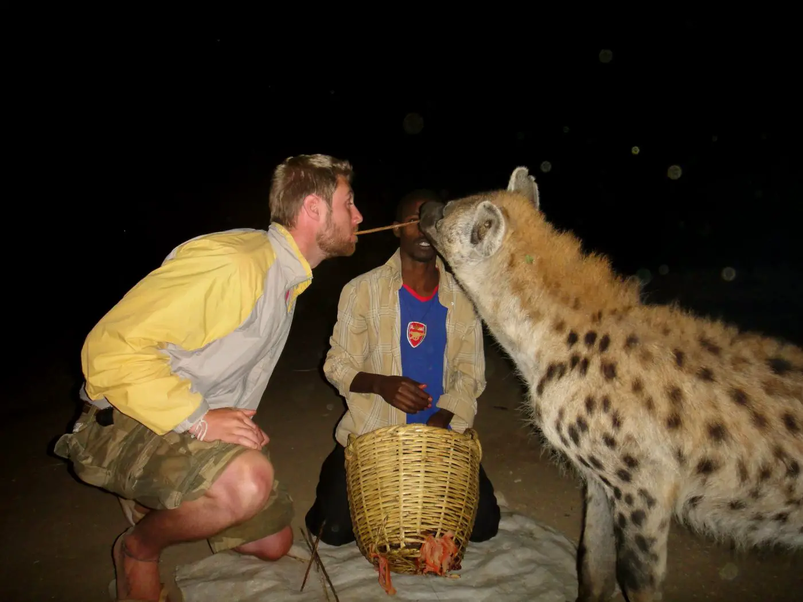

With its 368 alleyways squeezed into just 1 sq.km., Harar is believed to be the fourth holiest city after Mecca, Medina, and Jerusalem. The 82 mosques and 102 shrines within the fortified city formed the largest concentration of mosques in the world. Noted for being a center of Muslim scholarship and commerce, it once issued its own currency. The city’s lively markets and unique gey gar (city houses) are relicts of the many centuries when Harar served as the most important trade emporium in the Horn of Africa, linking the ports of the Somali coast to the fertile Ethiopian interior. Harar Jugol was inscribed as a UNESCO, World Heritage Site in 2006. Awarded the UNESCO Cities for Peace Prize in 2002, Harar is a delightful and welcoming city to explore on foot, its winding labyrinth of alleys leading to busy market places where colorfully-draped local women sell deliciously juicy tropical fruits, pastel-painted cafes brewing coffee plucked from the surrounding hills, and craftspeople such as cotton traditions weavers, jewelers and bookbinders.
Harar lies 510km east of Addis Ababa along a well-surfaced road, passing through Adama and Awash National Park. The main air gateway to Harar is Dire Dawa, 52km by road to the northwest.
Ethiopian Airlines (www.ethiopianairlines.com) flies daily between Addis Ababa and Dire Dawa, where taxis are available at the airport to whisk you along the surfaced road to Harar.
Another possible air gateway, Jijiga, the capital of the Somali Region, lies 100km east of Harar and is also connected to Addis Ababa by daily Ethiopian Airlines flights.
The Harar Jugol is best explored on foot with an experienced local guide who knows their way around its confusing maze of alleys. Guides can be arranged through any hotel or by asking at the central Tourist Information Office.
Taxis and bajaji can be picked up at Feres Megala and along the main road through the new town.
The most attractive accommodation is a quartet of inexpensive family-owned cultural guesthouses set in traditional Harari homes within the walls of Harar Jugol. A new international standard hotel is being built in 2015.
A few budget lodgings such as Heritage Plaza, Sumaya hotel, Harar Ras Hotel, Grand Gato Hotel, Wonderland Hotel, Belayneh Hotel, and Winta hotel are also scattered around the new town. Other hotels are found in Dire Dawa.
The usual Islamic holidays are celebrated in Harar, including Eid al-Fitr, the end of Ramadan. At the end of the fasting month of Ramadan, the first day of the month of Shewal is celebrated as Eid-al-Fitr. This is followed by six-days of fasting. The 8th day of the month of Shewal is Shewal Eid – a special Harari cultural festival, consisting of 24 hours of celebrations.
Harar comes alive during the Ashura ceremony, which takes place on the 10th day of Muharram, the first month of the Islamic calendar.
Kulubi Gebriel, on the road back towards Addis Ababa, attracts up to 100,000 Christian pilgrims on 26 July and 28 December, holy days dedicated to Kidus Gebriel (Saint Gabriel).

Hyena Feeding
One of Harar’s most enduringly popular attractions is its two ‘hyena men’, who make their living by feeding wild hyenas after dusk on the outskirts of Harar Jugol, thereby providing proof that Ethiopians are capable of perversity far beyond the call of duty. A highlight of any visit to Harar, even to those who have seen wild hyenas in less contrived proximity, this atmospheric spectacle usually starts at around 18.30, when the hyena man starts calling his familiars by name. After 10 minutes or so, the animals appear from the shadows, timidly at first, but they soon become bolder and start taking bones passed to them by human hand or mouth. Visitors are invited to feed the hyenas directly, too, before eventually, the stock of bones runs out, and these spectral creatures slink back to whence they came.